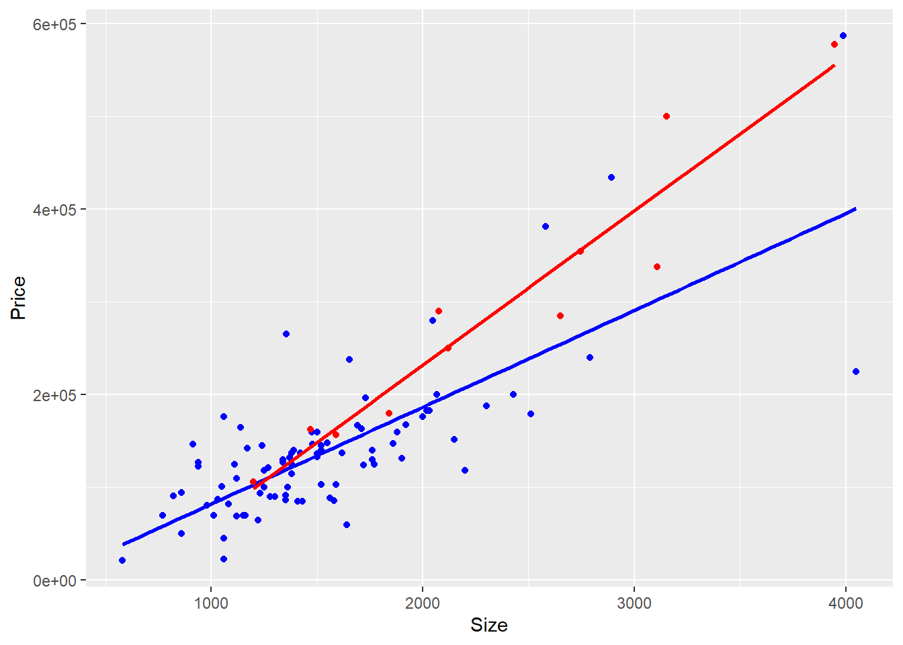

Loading required package: car
Loading required package: carData
Attaching package: 'car'
The following object is masked from 'package:dplyr':
recode
The following object is masked from 'package:purrr':
some
Loading required package: effects
lattice theme set by effectsTheme()
See ?effectsTheme for details.
Code
library(smss)
Warning: package 'smss' was built under R version 4.2.2
Code
knitr::opts_chunk$set(echo=TRUE, warning=FALSE)
Question 1
A
Given prediction equation: y = -10536 + 53.8x1 + 2.84x2 where x1 is the size of the home (sq ft) and x2 is the lot size (sq ft)
Using the prediction equation, the value that we get is $107,296 and the residual is $37,704. The residual tells us that the house was under-priced (under-predicted) by $37,704.
B
For a fixed lot size (say k), our prediction equation becomes y = -10536 + 53.8x1 + 2.84k where x1 (home size) is the only variable. So for each square-foot increase in home size, the house selling price predicted by the model increases by $53.8
For a fixed home size (say k), our prediction equation becomes y = -10536 + 53.8k + 2.84x2 where x2 (lot size) is the only variable. So for each square-foot increase in lot size, the house selling price predicted by the model increases by $2.84. For this to be equal to $53.8 we need to multiply it by 19.94366 - i.e., an increase by 18.94366.
data(salary)# testing for variancevar.test(salary ~ sex, data=salary)
F test to compare two variances
data: salary by sex
F = 0.84242, num df = 37, denom df = 13, p-value = 0.6525
alternative hypothesis: true ratio of variances is not equal to 1
95 percent confidence interval:
0.3015275 1.9189474
sample estimates:
ratio of variances
0.8424225
The p-value of F-test is 0.6525 which is greater than the significance level (alpha = 0.05). So we can say that there is no significant difference between the variances of the two sets of data.
Code
t.test(salary ~ sex, data=salary, var.equal=TRUE)
Two Sample t-test
data: salary by sex
t = 1.8474, df = 50, p-value = 0.0706
alternative hypothesis: true difference in means between group Male and group Female is not equal to 0
95 percent confidence interval:
-291.257 6970.550
sample estimates:
mean in group Male mean in group Female
24696.79 21357.14
The p-value of t-test is 0.0706 which is greater than the significance level (alpha = 0.05). So we can say that there is no significant difference in the mean salary between male and female faculty (at a 5% significance level).
B
Code
model =lm(salary ~ degree + rank + sex + year + ysdeg, data=salary)confint(model)
From sexFemale, we can say that the 95% confidence interval for the difference in salary between males and females is [-697.8183, 3030.56452]
C
Code
summary(model)
Call:
lm(formula = salary ~ degree + rank + sex + year + ysdeg, data = salary)
Residuals:
Min 1Q Median 3Q Max
-4045.2 -1094.7 -361.5 813.2 9193.1
Coefficients:
Estimate Std. Error t value Pr(>|t|)
(Intercept) 15746.05 800.18 19.678 < 2e-16 ***
degreePhD 1388.61 1018.75 1.363 0.180
rankAssoc 5292.36 1145.40 4.621 3.22e-05 ***
rankProf 11118.76 1351.77 8.225 1.62e-10 ***
sexFemale 1166.37 925.57 1.260 0.214
year 476.31 94.91 5.018 8.65e-06 ***
ysdeg -124.57 77.49 -1.608 0.115
---
Signif. codes: 0 '***' 0.001 '**' 0.01 '*' 0.05 '.' 0.1 ' ' 1
Residual standard error: 2398 on 45 degrees of freedom
Multiple R-squared: 0.855, Adjusted R-squared: 0.8357
F-statistic: 44.24 on 6 and 45 DF, p-value: < 2.2e-16
(a)
At a 95% confidence level, only rank and year are (statistically) significant predictors of salary.
(b)
Since we now know that rank and year are the significant variables, we will only consider those for interpretation. Associate Professors (rankAssoc) and Full Professors (rankProf) earn more than Assistant Professors (baseline category) by $5292.36 and $11118.76 respectively. Similarly, professors with more working experience (year) earn more. However, rank has a higher effect on salary than year as the coefficient for rank is much higher.
D
Code
salary$rank <-relevel(salary$rank, ref='Assoc')model.modified =lm(salary ~ degree + rank + sex + year + ysdeg, data=salary)summary(model.modified)
Call:
lm(formula = salary ~ degree + rank + sex + year + ysdeg, data = salary)
Residuals:
Min 1Q Median 3Q Max
-4045.2 -1094.7 -361.5 813.2 9193.1
Coefficients:
Estimate Std. Error t value Pr(>|t|)
(Intercept) 21038.41 1109.12 18.969 < 2e-16 ***
degreePhD 1388.61 1018.75 1.363 0.180
rankAsst -5292.36 1145.40 -4.621 3.22e-05 ***
rankProf 5826.40 1012.93 5.752 7.28e-07 ***
sexFemale 1166.37 925.57 1.260 0.214
year 476.31 94.91 5.018 8.65e-06 ***
ysdeg -124.57 77.49 -1.608 0.115
---
Signif. codes: 0 '***' 0.001 '**' 0.01 '*' 0.05 '.' 0.1 ' ' 1
Residual standard error: 2398 on 45 degrees of freedom
Multiple R-squared: 0.855, Adjusted R-squared: 0.8357
F-statistic: 44.24 on 6 and 45 DF, p-value: < 2.2e-16
Code
5826.40+5292.36
[1] 11118.76
We see similar results as above. Since the baseline category is now Associate Professor, we see a negative coefficient for Assistant Professor category which says that Associate Professors make $5292.36 more than Assistant Professors. Similarly, Full Professors make $5826.40 more than Associate Professors.
E
Code
summary(lm(salary ~ degree + sex + year + ysdeg, data=salary))
Call:
lm(formula = salary ~ degree + sex + year + ysdeg, data = salary)
Residuals:
Min 1Q Median 3Q Max
-8146.9 -2186.9 -491.5 2279.1 11186.6
Coefficients:
Estimate Std. Error t value Pr(>|t|)
(Intercept) 17183.57 1147.94 14.969 < 2e-16 ***
degreePhD -3299.35 1302.52 -2.533 0.014704 *
sexFemale -1286.54 1313.09 -0.980 0.332209
year 351.97 142.48 2.470 0.017185 *
ysdeg 339.40 80.62 4.210 0.000114 ***
---
Signif. codes: 0 '***' 0.001 '**' 0.01 '*' 0.05 '.' 0.1 ' ' 1
Residual standard error: 3744 on 47 degrees of freedom
Multiple R-squared: 0.6312, Adjusted R-squared: 0.5998
F-statistic: 20.11 on 4 and 47 DF, p-value: 1.048e-09
In addition to the variable year, degreePhD and ysdeg are also significantly contributing to salary. However, the p-value for sexFemale is still much greater than 0.05, meaning - sex is not significant when predicting for salary (at a 95% confidence level). We also observe that the coefficients for degreePhD, sexFemale and ysdeg got reversed (positive to negative and vice-versa). This suggests that professors with an MS are earning approximately $3300 more than the professors with a PhD, male professors are earning around $1286 more than female professors. We also see that the R-squared value has dropped - so this model does a poor job in explaining the variation in comparison with the other model where we included rank.
F
Code
salary <-mutate(salary, dean =case_when(ysdeg <15~"New", ysdeg >=15~"Old"))
Since the hypothesis depends on ysdeg and we created a new variable using it, I’m assuming that removing ysdeg should remove any multicollinearity.
Code
vif(lm(salary ~ dean + degree + sex + rank + year + ysdeg, data=salary))
GVIF Df GVIF^(1/(2*Df))
dean 3.986217 1 1.996551
degree 2.144390 1 1.464373
sex 1.542571 1 1.242003
rank 4.347951 2 1.444013
year 2.445467 1 1.563799
ysdeg 6.821294 1 2.611761
As a rule of thumb, a vif score over 5 is a problem. So I will be removing ysdeg from the predictors.
Code
summary(lm(salary ~ dean + degree + sex + rank + year, data=salary))
Call:
lm(formula = salary ~ dean + degree + sex + rank + year, data = salary)
Residuals:
Min 1Q Median 3Q Max
-3588.0 -1532.2 -232.2 565.7 9132.5
Coefficients:
Estimate Std. Error t value Pr(>|t|)
(Intercept) 20468.7 951.7 21.507 < 2e-16 ***
deanOld -2421.6 1187.9 -2.038 0.0474 *
degreePhD 1073.5 843.3 1.273 0.2096
sexFemale 1046.7 858.0 1.220 0.2289
rankAsst -5012.5 1002.3 -5.001 9.16e-06 ***
rankProf 6213.3 1045.0 5.946 3.76e-07 ***
year 450.7 81.5 5.530 1.55e-06 ***
---
Signif. codes: 0 '***' 0.001 '**' 0.01 '*' 0.05 '.' 0.1 ' ' 1
Residual standard error: 2360 on 45 degrees of freedom
Multiple R-squared: 0.8597, Adjusted R-squared: 0.841
F-statistic: 45.95 on 6 and 45 DF, p-value: < 2.2e-16
We see a negative coefficient for deanOld with a p-value less than 0.05 which suggests that the hypothesis is true. The faculty hired by the new dean make $2421.6 more than the old faculty.
Question 3
A
Code
data("house.selling.price")summary(lm(Price ~ Size + New, data = house.selling.price))
Call:
lm(formula = Price ~ Size + New, data = house.selling.price)
Residuals:
Min 1Q Median 3Q Max
-205102 -34374 -5778 18929 163866
Coefficients:
Estimate Std. Error t value Pr(>|t|)
(Intercept) -40230.867 14696.140 -2.738 0.00737 **
Size 116.132 8.795 13.204 < 2e-16 ***
New 57736.283 18653.041 3.095 0.00257 **
---
Signif. codes: 0 '***' 0.001 '**' 0.01 '*' 0.05 '.' 0.1 ' ' 1
Residual standard error: 53880 on 97 degrees of freedom
Multiple R-squared: 0.7226, Adjusted R-squared: 0.7169
F-statistic: 126.3 on 2 and 97 DF, p-value: < 2.2e-16
Both size and new are significant at a 95% confidence level. The coefficient for size suggests that for 1 square foot increase in the size of home, the price increases by $116.132 (considering that both are of the same condition - either old/new) and that for new suggests that if the home is new, the price increases by $57736.283 when compared to that of an old home of the same size.
B
Using the coefficients from above, the prediction equation becomes:
summary(lm(Price ~ Size * New, data = house.selling.price))
Call:
lm(formula = Price ~ Size * New, data = house.selling.price)
Residuals:
Min 1Q Median 3Q Max
-175748 -28979 -6260 14693 192519
Coefficients:
Estimate Std. Error t value Pr(>|t|)
(Intercept) -22227.808 15521.110 -1.432 0.15536
Size 104.438 9.424 11.082 < 2e-16 ***
New -78527.502 51007.642 -1.540 0.12697
Size:New 61.916 21.686 2.855 0.00527 **
---
Signif. codes: 0 '***' 0.001 '**' 0.01 '*' 0.05 '.' 0.1 ' ' 1
Residual standard error: 52000 on 96 degrees of freedom
Multiple R-squared: 0.7443, Adjusted R-squared: 0.7363
F-statistic: 93.15 on 3 and 96 DF, p-value: < 2.2e-16
E
Code
data.old <-subset(house.selling.price, New ==0)data.new <-subset(house.selling.price, New ==1)ggplot() +geom_smooth(data=data.old, aes(x = Size, y = Price), method ="lm", se =FALSE, color ="blue") +geom_point(data=data.old, aes(x = Size, y = Price), color ="blue") +geom_smooth(data=data.new, aes(x = Size, y = Price), method ="lm", se =FALSE, color ="red") +geom_point(data=data.new, aes(x = Size, y = Price), color ="red")
`geom_smooth()` using formula = 'y ~ x'
`geom_smooth()` using formula = 'y ~ x'

The red line and dots represent the new homes whereas the blue line and dots the not new homes.
F
From the coefficients that we got in D, the prediction equations become:
The difference in the price for new and not new homes of the same size seems to be less for smaller homes. This could suggest that size contributes more to price than the condition of the home.
H
I would prefer the second model with interaction as both the multiple R-squared and adjusted R-squared for that model are higher than that without interaction.
Source Code
---title: "Homework 4 - Prahitha Movva"author: "Prahitha Movva"description: "The fourth homework"date: "11/17/2022"format: html: toc: true code-fold: true code-copy: true code-tools: truecategories: - hw4 - multiple regression - interaction term - covariance---```{r}library(tidyverse)library(alr4)library(smss)knitr::opts_chunk$set(echo=TRUE, warning=FALSE)```## Question 1### AGiven prediction equation: y = -10536 + 53.8x1 + 2.84x2 where x1 is the size of the home (sq ft) and x2 is the lot size (sq ft)```{r}lot.size =18000home.size =1240actual.price =145000predicted.price =-10536+ (53.8*home.size) + (2.84*lot.size)print(predicted.price)residual = actual.price - predicted.priceprint(residual)```Using the prediction equation, the value that we get is \$107,296 and the residual is \$37,704. The residual tells us that the house was under-priced (under-predicted) by \$37,704.### BFor a fixed lot size (say k), our prediction equation becomes y = -10536 + 53.8x1 + 2.84k where x1 (home size) is the only variable. So for each square-foot increase in home size, the house selling price predicted by the model increases by $53.8```{r}y1 =-10536+ (53.8*1) +2.84y2 =-10536+ (53.8*2) +2.84y2 - y1```### CFor a fixed home size (say k), our prediction equation becomes y = -10536 + 53.8k + 2.84x2 where x2 (lot size) is the only variable. So for each square-foot increase in lot size, the house selling price predicted by the model increases by \$2.84. For this to be equal to \$53.8 we need to multiply it by 19.94366 - i.e., an increase by 18.94366. ```{r}53.8/2.84``````{r}y1 =-10536+ (53.8*1) +2.84y2 =-10536+ (53.8*2) +2.84print(y2 - y1)y1 =-10536+ (53.8*1) +2.84y2 =-10536+ (53.8*1) + (2.84*(1+18.94366))print(y2 - y1)```## Question 2### AH0: Mean salary for men and women is the sameHa: Mean salary for men and women is NOT the sameWe can test this using a two-sample t-test```{r}data(salary)# testing for variancevar.test(salary ~ sex, data=salary)```The p-value of F-test is 0.6525 which is greater than the significance level (alpha = 0.05). So we can say that there is no significant difference between the variances of the two sets of data.```{r}t.test(salary ~ sex, data=salary, var.equal=TRUE)```The p-value of t-test is 0.0706 which is greater than the significance level (alpha = 0.05). So we can say that there is no significant difference in the mean salary between male and female faculty (at a 5% significance level).### B```{r}model =lm(salary ~ degree + rank + sex + year + ysdeg, data=salary)confint(model)```From sexFemale, we can say that the 95% confidence interval for the difference in salary between males and females is [-697.8183, 3030.56452]### C```{r}summary(model)```#### (a)At a 95% confidence level, only rank and year are (statistically) significant predictors of salary. #### (b)Since we now know that rank and year are the significant variables, we will only consider those for interpretation. Associate Professors (rankAssoc) and Full Professors (rankProf) earn more than Assistant Professors (baseline category) by \$5292.36 and \$11118.76 respectively. Similarly, professors with more working experience (year) earn more. However, rank has a higher effect on salary than year as the coefficient for rank is much higher.### D```{r}salary$rank <-relevel(salary$rank, ref='Assoc')model.modified =lm(salary ~ degree + rank + sex + year + ysdeg, data=salary)summary(model.modified)``````{r}5826.40+5292.36```We see similar results as above. Since the baseline category is now Associate Professor, we see a negative coefficient for Assistant Professor category which says that Associate Professors make \$5292.36 more than Assistant Professors. Similarly, Full Professors make \$5826.40 more than Associate Professors.### E```{r}summary(lm(salary ~ degree + sex + year + ysdeg, data=salary))```In addition to the variable year, degreePhD and ysdeg are also significantly contributing to salary. However, the p-value for sexFemale is still much greater than 0.05, meaning - sex is not significant when predicting for salary (at a 95% confidence level). We also observe that the coefficients for degreePhD, sexFemale and ysdeg got reversed (positive to negative and vice-versa). This suggests that professors with an MS are earning approximately \$3300 more than the professors with a PhD, male professors are earning around \$1286 more than female professors. We also see that the R-squared value has dropped - so this model does a poor job in explaining the variation in comparison with the other model where we included rank.### F```{r}salary <-mutate(salary, dean =case_when(ysdeg <15~"New", ysdeg >=15~"Old"))```Since the hypothesis depends on ysdeg and we created a new variable using it, I'm assuming that removing ysdeg should remove any multicollinearity.```{r}vif(lm(salary ~ dean + degree + sex + rank + year + ysdeg, data=salary))```As a rule of thumb, a vif score over 5 is a problem. So I will be removing ysdeg from the predictors.```{r}summary(lm(salary ~ dean + degree + sex + rank + year, data=salary))```We see a negative coefficient for deanOld with a p-value less than 0.05 which suggests that the hypothesis is true. The faculty hired by the new dean make \$2421.6 more than the old faculty.## Question 3### A```{r}data("house.selling.price")summary(lm(Price ~ Size + New, data = house.selling.price))```Both size and new are significant at a 95% confidence level. The coefficient for size suggests that for 1 square foot increase in the size of home, the price increases by \$116.132 (considering that both are of the same condition - either old/new) and that for new suggests that if the home is new, the price increases by \$57736.283 when compared to that of an old home of the same size.### BUsing the coefficients from above, the prediction equation becomes:price = -40230.867 + (116.132 * home.size) + (57736.283 * home.new)Separate equations for new and not new homes: price.old = -40230.867 + (116.132 * home.size)price.new = -40230.867 + (116.132 * home.size) + 57736.283### C#### (i)```{r}price.new =-40230.867+ (116.132*3000) +57736.283price.new```#### (ii)```{r}price.old =-40230.867+ (116.132*3000)price.old```### D```{r}summary(lm(Price ~ Size * New, data = house.selling.price))```### E```{r}data.old <-subset(house.selling.price, New ==0)data.new <-subset(house.selling.price, New ==1)ggplot() +geom_smooth(data=data.old, aes(x = Size, y = Price), method ="lm", se =FALSE, color ="blue") +geom_point(data=data.old, aes(x = Size, y = Price), color ="blue") +geom_smooth(data=data.new, aes(x = Size, y = Price), method ="lm", se =FALSE, color ="red") +geom_point(data=data.new, aes(x = Size, y = Price), color ="red")```The red line and dots represent the new homes whereas the blue line and dots the not new homes.### FFrom the coefficients that we got in D, the prediction equations become:price = -22227.808 + (104.438 * home.size) + (-78527.502 * home.new) + (61.916 * home.size * home.new)price.old = -22227.808 + (104.438 * home.size)price.new = -22227.808 + (104.438 * home.size) - 78527.502 + (61.916 * home.size)#### (i)```{r}price.new =-22227.808+ (104.438*3000) -78527.502+ (61.916*3000)price.new```#### (ii)```{r}price.old =-22227.808+ (104.438*3000)price.old```### G#### (i)```{r}price.new =-22227.808+ (104.438*1500) -78527.502+ (61.916*1500)price.new```#### (ii)```{r}price.old =-22227.808+ (104.438*1500)price.old```The difference in the price for new and not new homes of the same size seems to be less for smaller homes. This could suggest that size contributes more to price than the condition of the home.### HI would prefer the second model with interaction as both the multiple R-squared and adjusted R-squared for that model are higher than that without interaction.